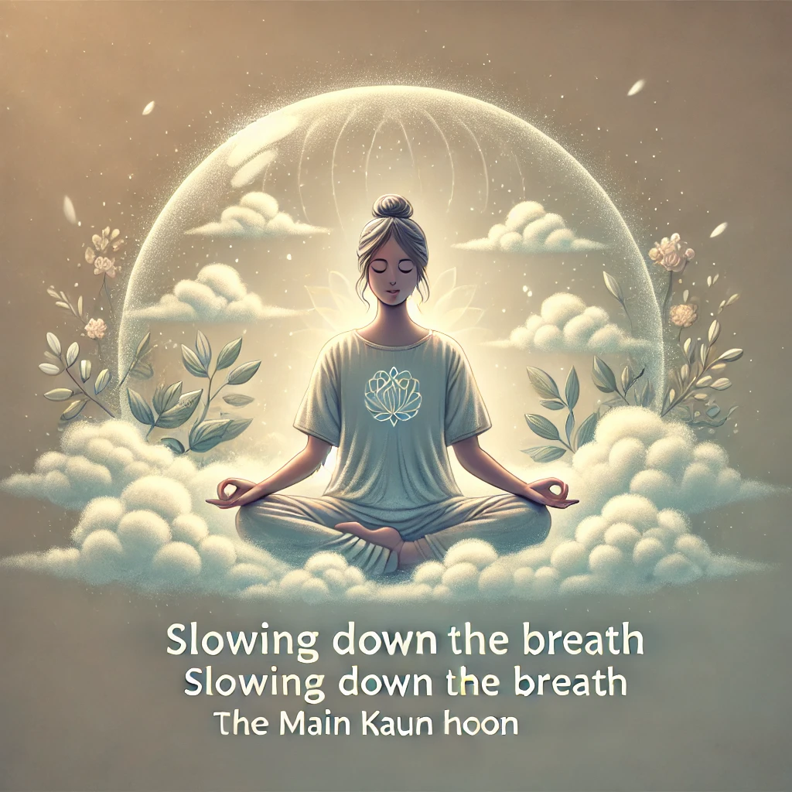

भाग तीन · अध्याय 9 · भीतर केंद्रित होना
मैं कौन हूँ?
'मैं कौन हूँ?' पूछते रहें, पर मन द्वारा दी गई पहचान-आधारित उत्तरों को अंतिम न मानें; प्रश्न को मन को मौन तक ले जाने दें।
इस ध्यान को कैसे शुरू करें?
वास्तविक ध्यान के लिए अभ्यास ऑडियो चलाएँ और पूरी प्रक्रिया का अनुसरण करें। ऑफ़लाइन अभ्यास करना हो तो ऑडियो पहले डाउनलोड कर लें।
अभ्यास की शैली
क्रम से पढ़ें: पहले इस चरण का निर्देश समझें, फिर उससे संबंधित चित्र देखें। वास्तविक ध्यान के दौरान नीचे दिया अभ्यास ऑडियो चला सकते हैं।
चरण 1
श्वास और जागरूकता
शांत बैठें और पूछें: 'मैं कौन हूँ?'
चरण 2
पूछें: 'मैं कौन हूँ?'
जब भी भूमिका, पहचान या अनुभव पर आधारित उत्तर आए, उसे देखें और अंतिम उत्तर न मानें।

चरण 3
प्रश्न को भी मौन होने दें
जब तक प्रश्न और उत्तर दोनों शांत न हो जाएँ, धैर्य से बने रहें।
साक्षीभाव न खोएँ
विधि केवल प्रवेश-द्वार है। चाहे उसमें श्वास, नृत्य, ध्वनि, अंधकार, बैठना या संबंध शामिल हो—मुख्य बात किसी अनुभव का पीछा करने के बजाय जो घट रहा है उसे धीरे-धीरे स्पष्ट देखना है।
विधि केवल प्रवेश-द्वार है। चाहे उसमें श्वास, नृत्य, ध्वनि, अंधकार, बैठना या संबंध शामिल हो—मुख्य बात किसी अनुभव का पीछा करने के बजाय जो घट रहा है उसे धीरे-धीरे स्पष्ट देखना है।
ध्यान शुरू करें · अभ्यास ऑडियो
वास्तविक ध्यान के लिए इस ऑडियो का उपयोग करें। इसे यहीं चला सकते हैं या ऑफ़लाइन अभ्यास के लिए फोन में डाउनलोड कर सकते हैं।